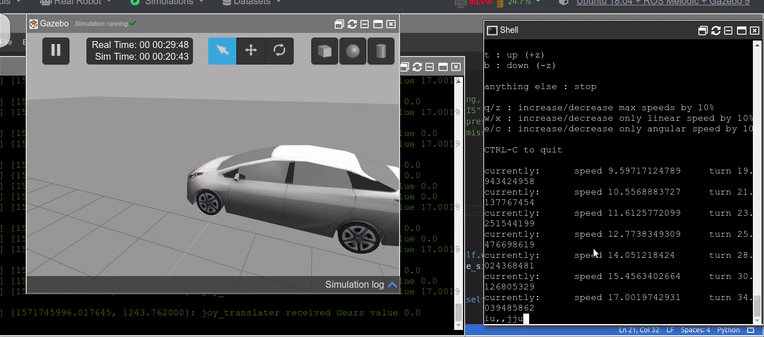
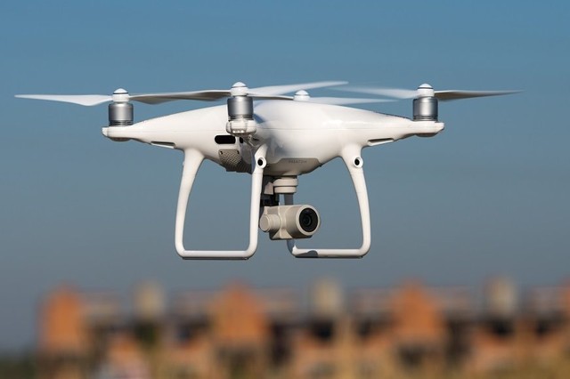

Learn about Autonomouns Car Driving (Simurosot)
Autonomous cars are one of the most interesting topics in the world. And developing them can be challenging in both hardware and software. The goal of FIRA Autonomous Cars Race Challenge is to encourage researchers designing and implementing an autonomous car and finally build this long-lived human imagination.
Due to the situation with covid-19 holding this challenge with participants in person is currently impossible, but a robot operating system (ROS) based 3D simulator is designed to make it possible to hold autonomous cars challenges even virtually, so participants can compete from all around the world remotely.
Read More

Learn about Air Drone
Artificial Intelligent Related Drone (AiR-Drone) competition which adopting FIRA AIR format is to encourage research teams for solving current problems of developing a smart and efficient drone in both commercial and industrial fields. While drones are used widely for aerial imaging, there are still lots of challenges when it comes to an autonomous, reliable and secure solution. Overall most of these difficulties are related to localization, exploration, and intelligent navigation in dynamic environments. The main challenge in this competition is towards smart drones capable of high altitude inspection and carrying packages in urban environments.
Read More